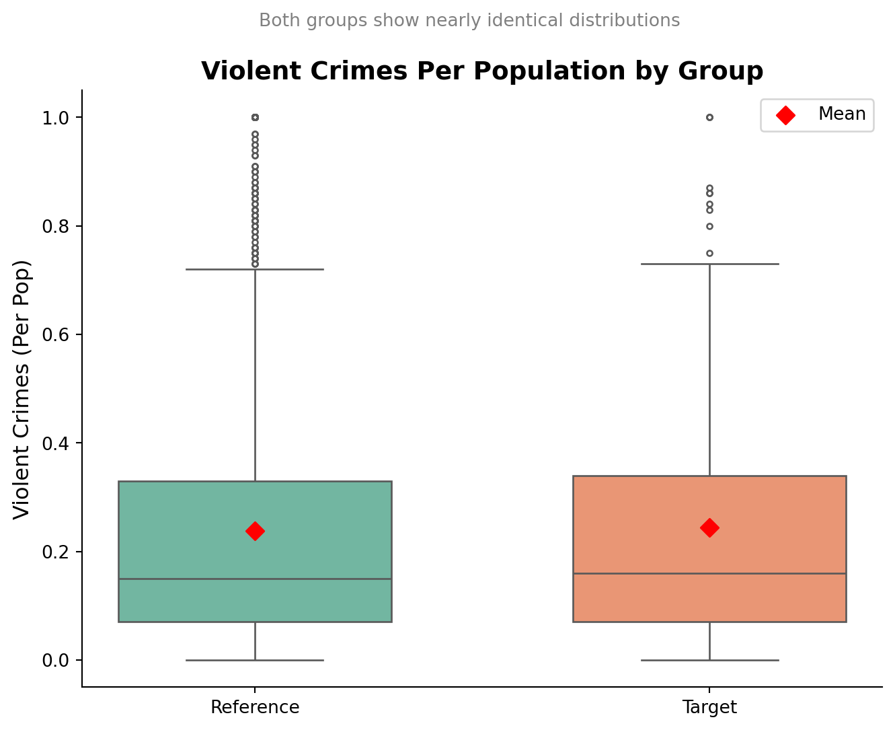
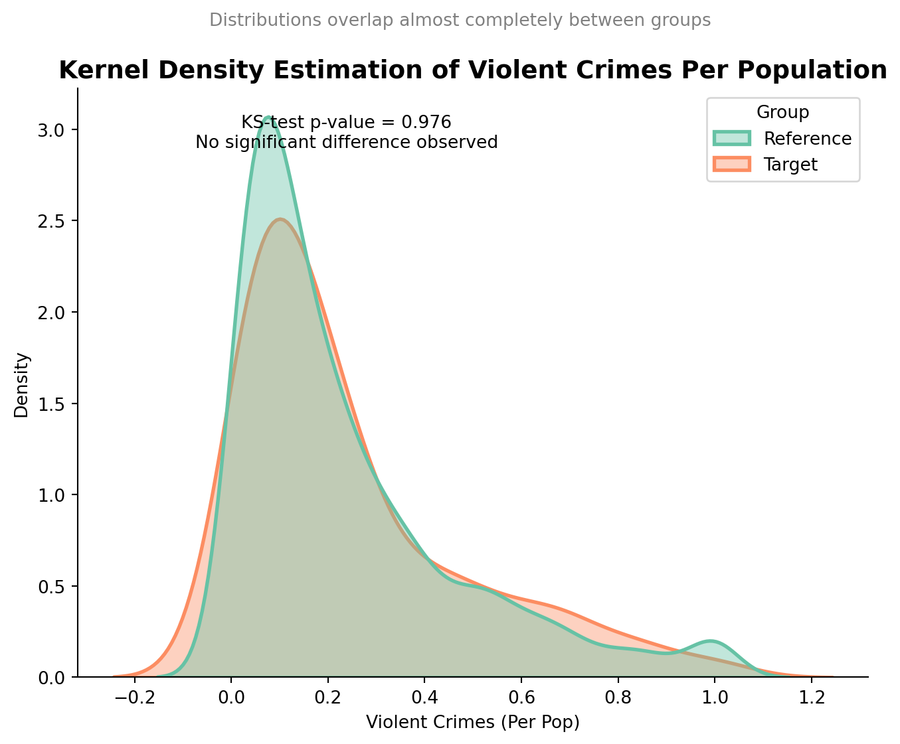
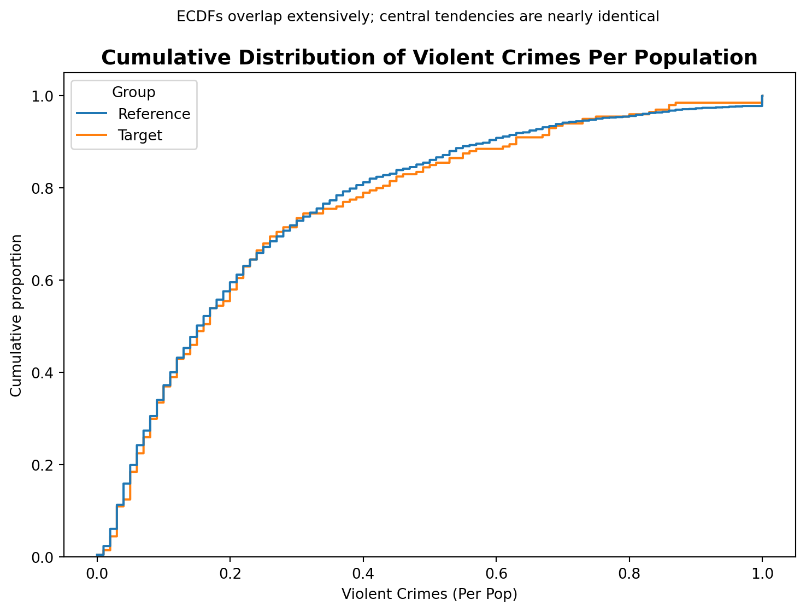
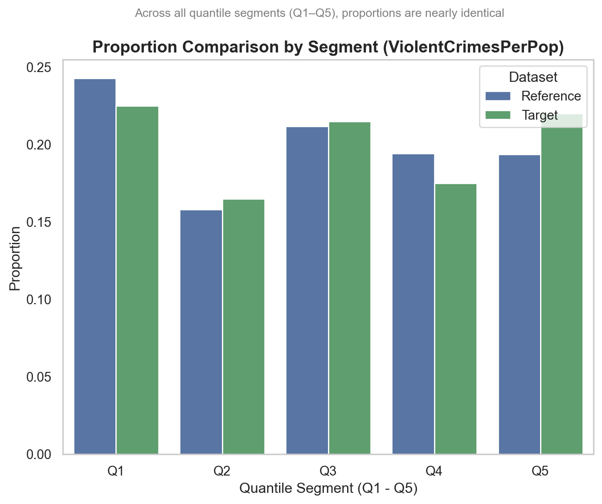
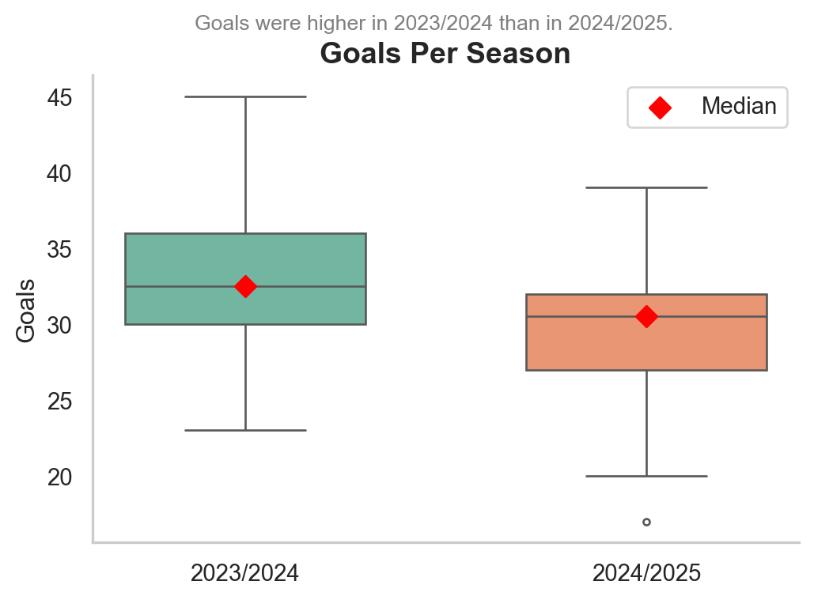
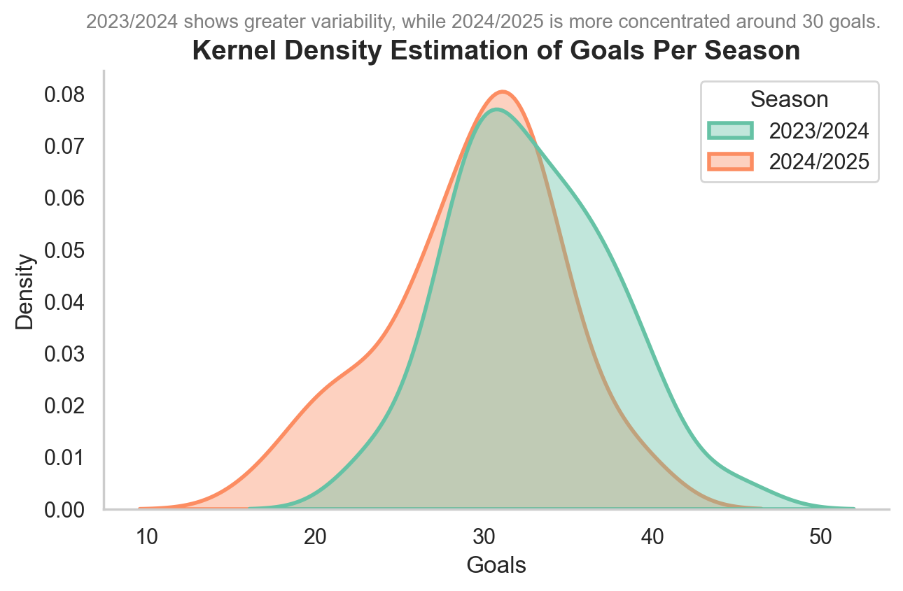
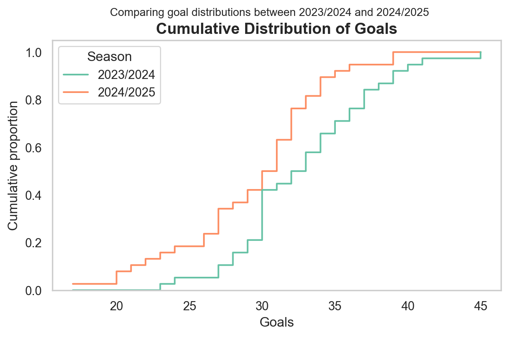
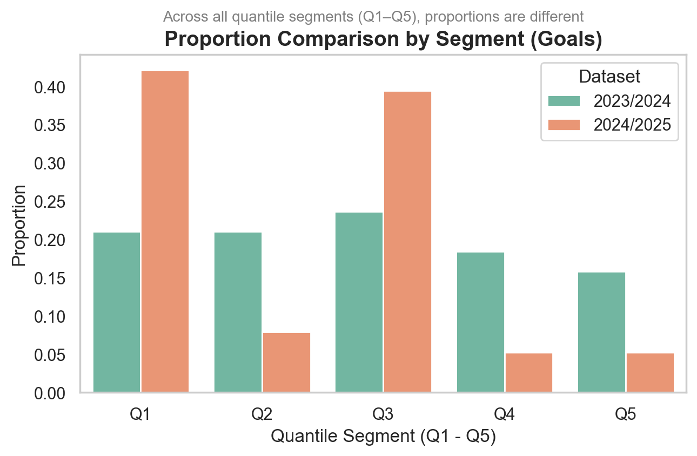
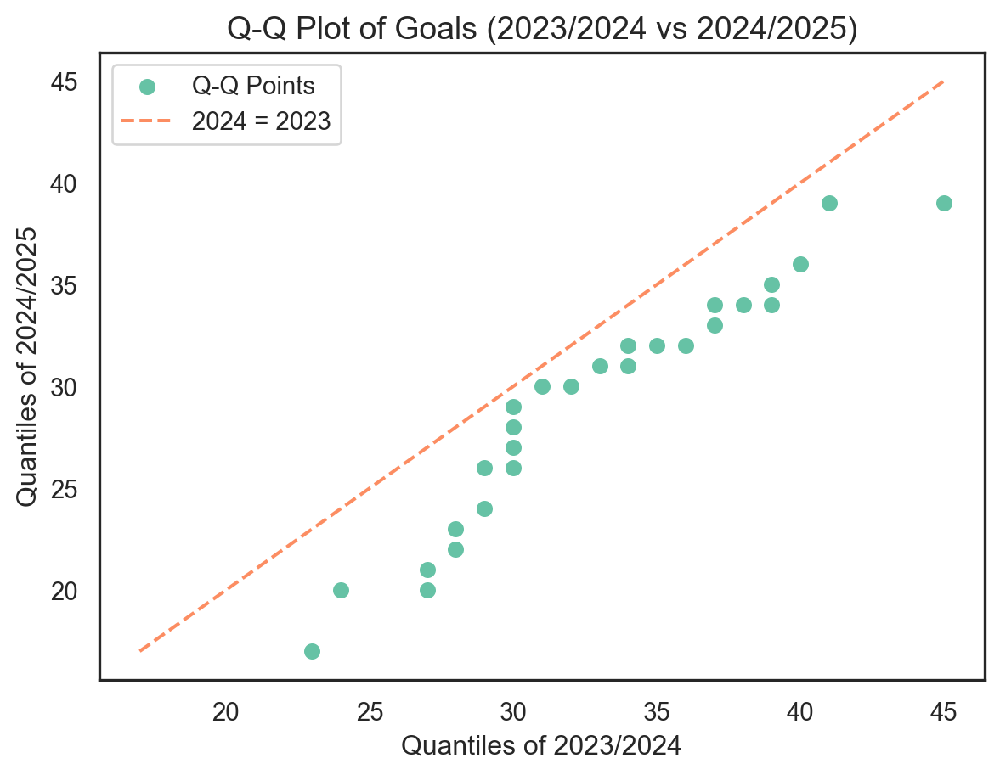
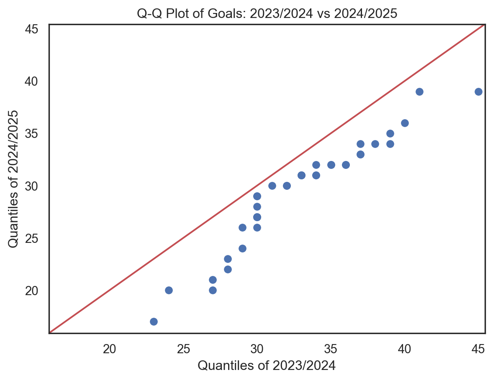

The issue of data representativeness arises frequently in modeling projects, whether academic or professional. Beyond its apparent simplicity, it raises a fundamental question: are the data used to build a model representative of the data the model will face in the real world?
By representativeness, we mean the extent to which a sample reflects the characteristics of the population it is supposed to model. In practice, this means that the distributions, proportions, and patterns observed in the training data should be consistent with those the model will encounter once implemented or deployed.
The first time I encountered this issue was while building a credit scoring model for a bank’s business clients. Like many others, I had been taught to split data into train, test, and sometimes out-of-sample sets. However, I realized that the real challenge was not simply achieving strong performance on the training data, but ensuring that the model remained reliable when applied to a different dataset or a new population of clients. Addressing this required comparing the distributions of key variables across datasets and verifying that they followed the same distribution.
In practice, comparing distributions is not just a theoretical exercise; it’s a critical step throughout the entire lifecycle of a model:
During design, to check whether the training sample reflects the global dataset.
In production, to detect population drift over time.
In regulatory validation, to demonstrate that the model is robust and generalizable.
To address this, we can use a variety of tools. Visual methods—such as histograms, boxplots, and density plots—provide quick intuition, while statistical methods allow us to quantify differences and make the analysis more objective.
In this article, we will focus on two particularly useful and complementary indicators:
the Population Stability Index (PSI), which measures distributional drift, and
Cramér’s V, which evaluates the strength of association between categories and helps assess whether two populations share the same structure.
Our goal is twofold:
to show why comparing distributions is crucial in credit scoring, and
to illustrate, through a concrete example, how PSI and Cramér’s V can be applied to evaluate representativeness between two datasets.
I. Comparing Distributions: A Key Challenge Throughout the Lifecycle of a Credit Model
From a statistician’s perspective, the lifecycle of a credit model can be summed up in three main stages.
The construction phase: this is where it all begins. You gather the data, clean it, split it into training, test, and out-of-time samples, estimate the parameters, and carefully document every decision. You ensure that the test and the out-of-time samples are representative of the training data.
The application phase: once the model is built, it must be confronted with reality. And here a crucial question arises: do the new datasets truly resemble the ones used during construction? If not, much of the previous work may quickly lose its value.
The monitoring phase, or backtesting: over time, populations evolve. The model must therefore be regularly challenged. Do its predictions remain valid? Is the representativeness of the target portfolio still ensured?
At each of these stages, the same recurring question plays like a refrain: Is the model still representative of the population it is supposed to score?
Practical Illustrations
To make this more concrete, let me share two situations I’ve encountered—or could easily have encountered in practice.
Case 1: A change in scope
Imagine a bank developing a scoring model for small businesses. The model performs well and is recognized internally. Encouraged by this success, the leadership decides to extend its use to large corporations. But here every statistician would pause to ask: do the characteristic variables of large corporations follow the same distributions as those of small businesses? If not, the model risks becoming fragile.
Case 2: A banking merger
Now consider Bank A, equipped with a proven model to assess client default risk. It merges with Bank B and seeks to harmonize its tools. The challenge: Bank B operates in a different economic environment, with a portfolio of clients that may not share the same structure. Before transferring the model, the distributions of key variables across the two portfolios must be compared. Once again, representativeness is at stake.
II. Comparing Distributions to Assess Representativeness Between Datasets
These examples show that behind every strategic decision; whether changing scope, merging models, or tracking their evolution over time—there lies the same underlying question: are the variable distributions sufficiently similar to guarantee the model’s robustness?
To answer it, statisticians can rely on a wide range of tools. Some are visual and intuitive:
overlaying histograms to instantly spot divergent densities,
using boxplots to compare medians and spreads,
plotting cumulative distribution functions or estimated densities to get a global view.
Others are statistical and more formalized:
the Kolmogorov-Smirnov test, which measures the maximum gap between two cumulative distributions,
the Chi-square test, well suited for categorical variables,
the Anderson-Darling test, particularly sensitive to differences in the tails.
These methods form a solid foundation, and Matteo Courthoud offers a clear and comprehensive overview of them in his article How to Compare Two (or More) Distributions.
But in credit risk, I’ve found that two indicators deserve special attention because they are simple, easy to use, and they address representativeness issues very directly:
the Population Stability Index (PSI), widely used to detect distribution shifts over time, and
Cramér’s V, which measures the strength of association between two categorical variables and helps assess the coherence between populations.
The next part of this article will focus on these two tools, showing how they complement classical approaches and illustrating their use with a concrete example.
III. Two Indicators to Assess Representativeness: PSI and Cramér’s V
When comparing distributions, we often start by examining the basic elements: cumulative curves or density graphs. These visualizations provide an initial overview of the differences and help to form an intuition. But intuition is not always enough: in practice, decision-makers also expect quantified measurements, not just graphs or pictures.
That’s where two tools come in: the Population Stability Index (PSI) and Cramér’s V. They’re easy to calculate, easy to read, and most importantly, they turn what a chart suggests into clear numbers. Instead of just saying “these distributions look different”, they tell us “this is how different they really are.” Whether you’re checking for risk drift or following portfolio stability, they make comparison both precise and practical.
1. The Population Stability Index (PSI)
The PSI is a fundamental tool in the credit industry. It measures the difference between two distributions of the same variable:
for example, between the training dataset and a more recent application dataset,
or between a reference dataset at time \(T_0\) and another at time \(T_1\).
In other words, the PSI quantifies how much a population has drifted over time or across different scopes.
Here’s how it works in practice:
For a categorical variable, we compute the proportion of observations in each category for both datasets.
For a continuous variable, we first discretize it into bins. In practice, deciles are often used to obtain a balanced distribution.
The PSI then compares, bin by bin, the proportions observed in the reference dataset versus the target dataset. The final indicator aggregates these differences using a logarithmic formula:
where \(p_i\) and \(q_i\) represent the proportions in bin \(i\) for the reference dataset and the target dataset, respectively.
The interpretation is highly intuitive:
A smaller PSI means the two distributions are closer.
A PSI of 0 means the distributions are identical.
A very large PSI (tending toward infinity) means the two distributions are fundamentally different.
In practice, industry guidelines often use the following thresholds:
PSI < 0.1: the population is stable,
0.1 ≤ PSI < 0.25: the shift is noticeable—monitor closely,
PSI ≥ 0.25: the shift is significant—the model may no longer be reliable.
2. Cramér’s V
When assessing the representativeness of a categorical variable (or a discretized continuous variable) between two datasets, a natural starting point is the Chi-square test of independence.
We build a contingency table crossing:
the categories (modalities) of the variable of interest, and
an indicator variable for dataset membership (Dataset 1 / Dataset 2).
where \(O_{ij}\) are the observed counts and \(E_{ij}\) are the expected counts under the assumption of independence.
Null hypothesis \(H_0\): the variable has the same distribution in both datasets (independence).
Alternative hypothesis \(H_1\): the distributions differ.
If \(H_0\) is rejected, we conclude that the variable does not follow the same distribution across the two datasets.
However, the Chi-square test has a major limitation: it only provides a binary answer (reject / do not reject), and its power is highly sensitive to sample size. With very large datasets, even tiny differences can appear statistically significant.
To address this limitation, we use Cramér’s V, which rescales the Chi-square statistic to produce a normalized measure of association bounded between 0 and 1:
\[
V = \sqrt{\frac{\chi^2}{n \cdot \min(r-1,\,c-1)}}
\]
where $n$ is the total sample size, $r$ is the number of rows, and $c$ is the number of columns in the contingency table.
The interpretation is intuitive:
\(V \approx 0\) → the distributions are very similar; representativeness is strong.
\(V\) close to 1 → the difference between distributions is large; the datasets are structurally different.
Unlike the Chi-square test, which simply answers “yes” or “no,” Cramér’s V provides a graded measure of the strength of the difference. This allows us to assess whether the difference is negligible, moderate, or substantial.
Applying PSI and Cramér’s V: A Simple Python Example
In a previous article, we applied different variable selection methods to reduce the Communities & Crime dataset to just 16 explanatory variables. This step was essential to simplify the model while keeping the most relevant information.
This dataset also includes a variable called fold, which splits the data into 10 subsamples. These folds are commonly used in cross-validation: they allow us to test the robustness of a model by training it on one part of the data and validating it on another.
Why Compare a Fold to the Global Dataset?
If a fold is representative of the overall dataset, then working with this subsample—and aggregating the results across all folds—should yield reliable conclusions at the full-dataset level.
In this article, we’ll look at a concrete example: checking whether fold 1 is representative of the global dataset.
Step 1: Start with the Target Variable
We begin with the target variable. The idea is simple: compare its distribution between fold 1 and the entire dataset. To quantify this difference, we’ll use two complementary indicators:
the Population Stability Index (PSI), which measures distributional shifts,
Cramér’s V, which measures the strength of association between two categorical variables.
Step 2: Automating the Analysis for All Variables
After illustrating the approach with the target, we extend it to all features. We’ll build a Python function that computes PSI and Cramér’s V for each of the 19 explanatory variables, as well as for the target variable.
To make the results easy to interpret, we’ll export everything into an Excel file with:
one sheet per variable, showing the detailed comparison by segment,
a Summary tab, aggregating results across all variables.
Comparing the target variable ViolentCrimesPerPop between the global dataset (reference) and fold 1 (target)
Before applying statistical tests or building decision indicators, it is essential to conduct a descriptive and graphical analysis. There are not just formalities; they provide an early intuition about the differences between populations and help interpreting the results. In practice, a well-chosen chart often reveals the conclusions that indicators like PSI or Cramér’s V will later confirm (or challenge).
For visualization, we proceed in three steps:
1. Comparing continuous distributions We begin with graphical tools such as boxplots, cumulative distribution functions, and probability density plots. These visualizations provide an intuitive way to examine differences in the target variable’s distribution between the two datasets.
2. Discretization into quantiles Next, we discretize the variable in the reference dataset using quartiles (Q1, Q2, Q3, Q4), which creates five classes (Q1 through Q5). We then apply the exact same cut-off points to the target dataset, ensuring that each observation is mapped to intervals defined from the reference. This guarantees comparability between the two distributions.
3. Comparing categorical distributions Finally, once the variable has been discretized, we can use visualization methods suited for categorical data — such as bar charts — to compare how frequencies are distributed across the two datasets.
The process depends on the type of variable:
For a continuous variable:
Start with standard visualizations (boxplots, cumulative distributions, and density plots).
Next, split the variable into segments (Q1 to Q5) based on the reference dataset’s quantiles.
Finally, treat these segments as categories and compare their distributions.
For a categorical variable:
No discretization is needed — it’s already in categorical form.
Go straight to comparing category distributions, for example with a bar chart.
The code below prepares the two datasets we want to compare and then visualizes the target variable with a boxplot, showing its distribution in both the global dataset and in fold 1.
import pandas as pdimport numpy as npimport seaborn as snsimport matplotlib.pyplot as pltfrom scipy.stats import chi2_contingency, ks_2sampdata = pd.read_csv("data/communities_data.csv")# filter sur fold =1data_ref = datadata_target = data[data["fold"] ==1]# compare the two distribution of "ViolentCrimesPerPop" in the reference and target datasets with boxplots# Build datasets with a "Group" columndf_ref = pd.DataFrame({"ViolentCrimesPerPop": data_ref["ViolentCrimesPerPop"],"Group": "Reference"})df_target = pd.DataFrame({"ViolentCrimesPerPop": data_target["ViolentCrimesPerPop"],"Group": "Target"})# Merge themdf_all = pd.concat([df_ref, df_target])plt.figure(figsize=(8, 6))# Boxplot with both distributions overlayedsns.boxplot( x="Group", y="ViolentCrimesPerPop", data=df_all, palette="Set2", width=0.6, fliersize=3)# Add mean pointsmeans = df_all.groupby("Group")["ViolentCrimesPerPop"].mean()for i, m inenumerate(means): plt.scatter(i, m, color="red", marker="D", s=50, zorder=3, label="Mean"if i ==0else"")# Title tells the storyplt.title("Violent Crimes Per Population by Group", fontsize=14, weight="bold")plt.suptitle("Both groups show nearly identical distributions", fontsize=10, color="gray")plt.ylabel("Violent Crimes (Per Pop)", fontsize=12)plt.xlabel("")# Cleaner looksns.despine()plt.grid(visible=False)plt.legend()plt.show()print(len(data.columns))
/var/folders/v8/l5q0bw4s2ln17s59y7cc86rm0000gn/T/ipykernel_57553/1831008403.py:35: FutureWarning:
Passing `palette` without assigning `hue` is deprecated and will be removed in v0.14.0. Assign the `x` variable to `hue` and set `legend=False` for the same effect.

18
The figure above suggests that both groups share similar distributions for the ViolentCrimesPerPop variable. To take a closer look, we can use Kernel Density Estimation (KDE) plots, which provide a smooth view of the underlying distribution and make it easier to spot subtle differences.
plt.figure(figsize=(8, 6))# KDE plots with better stylingsns.kdeplot( data=df_all, x="ViolentCrimesPerPop", hue="Group", fill=True, # use shading for overlap alpha=0.4, # transparency to show overlap common_norm=False, palette="Set2", linewidth=2)# KS-test for distribution differenceg1 = df_all[df_all["Group"] == df_all["Group"].unique()[0]]["ViolentCrimesPerPop"]g2 = df_all[df_all["Group"] == df_all["Group"].unique()[1]]["ViolentCrimesPerPop"]stat, pval = ks_2samp(g1, g2)# Add annotationplt.text(df_all["ViolentCrimesPerPop"].mean(), plt.ylim()[1]*0.9,f"KS-test p-value = {pval:.3f}\nNo significant difference observed", ha="center", fontsize=10, color="black")# Titles with storyplt.title("Kernel Density Estimation of Violent Crimes Per Population", fontsize=14, weight="bold")plt.suptitle("Distributions overlap almost completely between groups", fontsize=10, color="gray")plt.xlabel("Violent Crimes (Per Pop)")plt.ylabel("Density")sns.despine()plt.grid(False)plt.show()

The KDE graph confirms that the two distributions are very similar, showing a high degree of overlap. The Kolmogorov-Smirnov (KS) statistical test of 0.976 also indicates that there is no significant difference between the two groups. To extend the analysis, we can now examine the cumulative distribution of the target variable.
# Cumulative distributionplt.figure(figsize=(9, 6))sns.histplot( data=df_all, x="ViolentCrimesPerPop", hue="Group", stat="density", common_norm=False, fill=False, element="step", bins=len(df_all), cumulative=True,)# Titles tell the storyplt.title("Cumulative Distribution of Violent Crimes Per Population", fontsize=14, weight="bold")plt.suptitle("ECDFs overlap extensively; central tendencies are nearly identical", fontsize=10)# Labels & cleanupplt.xlabel("Violent Crimes (Per Pop)")plt.ylabel("Cumulative proportion")plt.grid(visible=False)plt.show()

The cumulative distribution plot provides additional evidence that the two groups are very similar. The curves overlap almost completely, suggesting that their distributions are nearly identical in both central tendency and spread.
As a next step, we’ll discretize the variable into quantiles in the reference dataset and then apply the same cut-off points to the target dataset (fold 1). The code below demonstrates how to do this. Finally, we’ll compare the resulting distributions using a bar chart.
def bin_numeric(ref, tgt, n_bins=5):""" Discretize a numeric variable into quantile bins (ex: quintiles). - Quantile thresholds are computed only on the reference dataset. - Extend bins with -inf and +inf to cover all possible values. - Returns: * ref binned * tgt binned * bin labels (Q1, Q2, ...) """ edges = np.unique(ref.dropna().quantile(np.linspace(0, 1, n_bins +1)).values)iflen(edges) <3: # if variable is almost constant edges = np.array([-np.inf, np.inf])else: edges[0], edges[-1] =-np.inf, np.inf labels = [f"Q{i}"for i inrange(1, len(edges))]return ( pd.cut(ref, bins=edges, labels=labels, include_lowest=True), pd.cut(tgt, bins=edges, labels=labels, include_lowest=True), labels )# Apply binningref_binned, tgt_binned, bin_labels = bin_numeric(data_ref["ViolentCrimesPerPop"], data_target["ViolentCrimesPerPop"], n_bins=5)# Effectifs par segment pour Reference et Targetref_counts = ref_binned.value_counts().reindex(bin_labels, fill_value=0)tgt_counts = tgt_binned.value_counts().reindex(bin_labels, fill_value=0)# Convertir en proportionsref_props = ref_counts / ref_counts.sum()tgt_props = tgt_counts / tgt_counts.sum()# Construire un DataFrame pour seaborndf_props = pd.DataFrame({"Segment": bin_labels,"Reference": ref_props.values,"Target": tgt_props.values})# Restructurer en format longdf_long = df_props.melt(id_vars="Segment", value_vars=["Reference", "Target"], var_name="Source", value_name="Proportion")# Style sobresns.set_theme(style="whitegrid")# Barplot avec proportionsplt.figure(figsize=(8,6))sns.barplot( x="Segment", y="Proportion", hue="Source", data=df_long, palette=["#4C72B0", "#55A868"] # bleu & vert sobres)# Titre et légende# Titles with storyplt.title("Proportion Comparison by Segment (ViolentCrimesPerPop)", fontsize=14, weight="bold")plt.suptitle("Across all quantile segments (Q1–Q5), proportions are nearly identical", fontsize=10, color="gray")plt.xlabel("Quantile Segment (Q1 - Q5)")plt.ylabel("Proportion")plt.legend(title="Dataset", loc="upper right")plt.grid(False)plt.show()

As before, we reach the same conclusion: the distributions in the reference and target datasets are very similar. To move beyond visual inspection, we will now compute the Population Stability Index (PSI) and Cramér’s V statistic. These metrics allow us to quantify the differences between distributions; both for all variables in general and for the target variable ViolentCrimesPerPop in particular.
EPS =1e-12# A very small constant to avoid division by zero or log(0)# ============================================================# 1. Basic functions# ============================================================def safe_proportions(counts):""" Convert raw counts into proportions in a safe way. - If the total count = 0, return all zeros (to avoid division by zero). - Clip values so no proportion is exactly 0 or 1 (numerical stability). """ total = counts.sum()if total ==0:return np.zeros_like(counts, dtype=float) p = counts / totalreturn np.clip(p, EPS, 1.0)def calculate_psi(p_ref, p_tgt):""" Compute the Population Stability Index (PSI) between two distributions. PSI = sum( (p_ref - p_tgt) * log(p_ref / p_tgt) ) Interpretation: - PSI < 0.1 → stable - 0.1–0.25 → moderate shift - > 0.25 → major shift """ p_ref = np.clip(p_ref, EPS, 1.0) p_tgt = np.clip(p_tgt, EPS, 1.0)returnfloat(np.sum((p_ref - p_tgt) * np.log(p_ref / p_tgt)))def calculate_cramers_v(contingency):""" Compute Cramér's V statistic for association between two categorical variables. - Input: a 2 x K contingency table (counts). - Uses Chi² test. - Normalizes the result to [0, 1]. * 0 → no association * 1 → perfect association """ chi2, _, _, _ = chi2_contingency(contingency, correction=False) n = contingency.sum() r, c = contingency.shapeif n ==0ormin(r -1, c -1) ==0:return0.0return np.sqrt(chi2 / (n * (min(r -1, c -1))))# ============================================================# 2. Preparing variables# ============================================================def bin_numeric(ref, tgt, n_bins=5):""" Discretize a numeric variable into quantile bins (ex: quintiles). - Quantile thresholds are computed only on the reference dataset. - Extend bins with -inf and +inf to cover all possible values. - Returns: * ref binned * tgt binned * bin labels (Q1, Q2, ...) """ edges = np.unique(ref.dropna().quantile(np.linspace(0, 1, n_bins +1)).values)iflen(edges) <3: # if variable is almost constant edges = np.array([-np.inf, np.inf])else: edges[0], edges[-1] =-np.inf, np.inf labels = [f"Q{i}"for i inrange(1, len(edges))]return ( pd.cut(ref, bins=edges, labels=labels, include_lowest=True), pd.cut(tgt, bins=edges, labels=labels, include_lowest=True), labels )def prepare_counts(ref, tgt, n_bins=5):""" Prepare frequency counts for one variable. - If numeric: discretize into quantile bins. - If categorical: take all categories present in either dataset. Returns: segments, counts in reference, counts in target """if pd.api.types.is_numeric_dtype(ref) and pd.api.types.is_numeric_dtype(tgt): ref_b, tgt_b, labels = bin_numeric(ref, tgt, n_bins) segments = labelselse: segments =sorted(set(ref.dropna().unique()) |set(tgt.dropna().unique())) ref_b, tgt_b = ref.astype(str), tgt.astype(str) ref_counts = ref_b.value_counts().reindex(segments, fill_value=0) tgt_counts = tgt_b.value_counts().reindex(segments, fill_value=0)return segments, ref_counts, tgt_counts# ============================================================# 3. Analysis per variable# ============================================================def analyze_variable(ref, tgt, n_bins=5):""" Analyze a single variable between two datasets. Steps: - Build counts by segment (bin for numeric, category for categorical). - Compute PSI by segment and Global PSI. - Compute Cramér's V from the contingency table. - Return: DataFrame with details Summary dictionary (psi, v_cramer) """ segments, ref_counts, tgt_counts = prepare_counts(ref, tgt, n_bins) p_ref, p_tgt = safe_proportions(ref_counts.values), safe_proportions(tgt_counts.values)# PSI psi_global = calculate_psi(p_ref, p_tgt) psi_by_segment = (p_ref - p_tgt) * np.log(p_ref / p_tgt)# Cramér's V contingency = np.vstack([ref_counts.values, tgt_counts.values]) v_cramer = calculate_cramers_v(contingency)# Build detailed results table df = pd.DataFrame({"Segment": segments,"Count Reference": ref_counts.values,"Count Target": tgt_counts.values,"Percent Reference": p_ref,"Percent Target": p_tgt,"PSI by Segment": psi_by_segment })# Add summary lines at the bottom of the table df.loc[len(df)] = ["Global PSI", np.nan, np.nan, np.nan, np.nan, psi_global] df.loc[len(df)] = ["Cramer's V", np.nan, np.nan, np.nan, np.nan, v_cramer]return df, {"psi": psi_global, "v_cramer": v_cramer}# ============================================================# 4. Excel reporting utilities# ============================================================def apply_traffic_light(ws, wb, first_row, last_row, col, low, high):""" Apply conditional formatting (traffic light colors) to a numeric column in Excel: - green if value < low - orange if low <= value <= high - red if value > high Note: first_row, last_row, and col are zero-based indices (xlsxwriter convention). """ green = wb.add_format({"bg_color": "#C6EFCE", "font_color": "#006100"}) orange = wb.add_format({"bg_color": "#FCD5B4", "font_color": "#974706"}) red = wb.add_format({"bg_color": "#FFC7CE", "font_color": "#9C0006"})if last_row < first_row:return# nothing to color ws.conditional_format(first_row, col, last_row, col, {"type": "cell", "criteria": "<", "value": low, "format": green}) ws.conditional_format(first_row, col, last_row, col, {"type": "cell", "criteria": "between", "minimum": low, "maximum": high, "format": orange}) ws.conditional_format(first_row, col, last_row, col, {"type": "cell", "criteria": ">", "value": high, "format": red})def representativity_report(ref_df, tgt_df, variables, output="representativity.xlsx", n_bins=5, psi_thresholds=(0.10, 0.25), v_thresholds=(0.10, 0.25), color_summary=True):""" Build a representativity report across multiple variables and export to Excel. For each variable: - Create a sheet with detailed PSI by segment, Global PSI, and Cramer's V. - Apply traffic light colors for easier interpretation. Create one "Résumé" sheet with overall Global PSI and Cramer's V for all variables. """ summary = []with pd.ExcelWriter(output, engine="xlsxwriter") as writer: wb = writer.book fmt_header = wb.add_format({"bold": True, "bg_color": "#0070C0","font_color": "white", "align": "center"}) fmt_pct = wb.add_format({"num_format": "0.00%"}) fmt_ratio = wb.add_format({"num_format": "0.000"}) fmt_int = wb.add_format({"num_format": "0"})for var in variables:# Analyze variable df, meta = analyze_variable(ref_df[var], tgt_df[var], n_bins) sheet = var[:31] # Excel sheet names are limited to 31 characters df.to_excel(writer, sheet_name=sheet, index=False) ws = writer.sheets[sheet]# Format headers and columnsfor j, col inenumerate(df.columns): ws.write(0, j, col, fmt_header) ws.set_column(0, 0, 18) ws.set_column(1, 2, 16, fmt_int) ws.set_column(3, 4, 20, fmt_pct) ws.set_column(5, 5, 18, fmt_ratio) nrows =len(df) # number of data rows (excluding header) col_psi =5# "PSI by Segment" column index# PSI by Segment rows apply_traffic_light(ws, wb, first_row=1, last_row=max(1, nrows-2), col=col_psi, low=psi_thresholds[0], high=psi_thresholds[1])# Global PSI row (second to last) apply_traffic_light(ws, wb, first_row=nrows-1, last_row=nrows-1, col=col_psi, low=psi_thresholds[0], high=psi_thresholds[1])# Cramer's V row (last row) apply_traffic_light(ws, wb, first_row=nrows, last_row=nrows, col=col_psi, low=v_thresholds[0], high=v_thresholds[1])# Add summary info for Résumé sheet summary.append({"Variable": var,"Global PSI": meta["psi"],"Cramer's V": meta["v_cramer"]})# Résumé sheet df_sum = pd.DataFrame(summary) df_sum.to_excel(writer, sheet_name="Résumé", index=False) ws = writer.sheets["Résumé"]for j, col inenumerate(df_sum.columns): ws.write(0, j, col, fmt_header) ws.set_column(0, 0, 28) ws.set_column(1, 2, 16, fmt_ratio)# Apply traffic light to summary sheetif color_summary andlen(df_sum) >0: last =len(df_sum)# PSI column apply_traffic_light(ws, wb, 1, last, 1, psi_thresholds[0], psi_thresholds[1])# Cramer's V column apply_traffic_light(ws, wb, 1, last, 2, v_thresholds[0], v_thresholds[1])return output# ============================================================# Example# ============================================================if__name__=="__main__":# columns namees privées de fold columns = [x for x in data.columns if x !="fold"]print(columns)# Generate the report path = representativity_report(data_ref, data_target, columns, output="representativity.xlsx")print(f" Report generated: {path}")
As mentioned earlier, the results of the distribution comparisons for each variable between the two datasets, calculated using PSI and Cramér’s V, are presented in separate sheets within a single Excel file.
To illustrate, we will first look at the results for the target variable. This example shows how both PSI and Cramér’s V are computed and how their values can be interpreted in practice.
Finally, we will introduce the last sheet of the file, titled Summary, which consolidates the results for all variables of interest. This synthesis provides a global view of representativeness between the two datasets and makes interpretation and decision-making much easier.
import os, time, requests, pandas as pd# --- paramètres de base ---API_URL ="https://api.football-data.org/v4/competitions/PL/matches"SEASONS = [2023, 2024] # 2023-24 et 2024-25# --- hardcoder la clé pour un test local ---TOKEN ="46ff0dc946b740059274353d6889b27b"# <-- colle ici ta clé brute# hardcoder la cléifnot TOKEN:raiseRuntimeError("Variable d'environnement FOOTBALL_DATA_TOKEN absente.")headers = {"X-Auth-Token": TOKEN}rows = []for season in SEASONS: params = {"season": season} r = requests.get(API_URL, params=params, headers=headers, timeout=30)if r.status_code ==429:# rate-limit: petite pause puis retry time.sleep(10) r = requests.get(API_URL, params=params, headers=headers, timeout=30) r.raise_for_status()for m in r.json().get("matches", []):# On garde les matches terminés ou attribuésif m.get("status") in {"FINISHED", "AWARDED"}: md = m.get("matchday") score = m.get("score", {}).get("fullTime", {}) hg, ag = score.get("home"), score.get("away")if hg isNoneor ag isNoneor md isNone:continue rows.append({"season": season,"match_id": m.get("id"),"utcDate": m.get("utcDate"),"matchday": int(md),"homeTeam": m.get("homeTeam", {}).get("name"),"awayTeam": m.get("awayTeam", {}).get("name"),"homeGoals": int(hg),"awayGoals": int(ag),"totalGoals": int(hg) +int(ag),"venue": (m.get("area") or {}).get("name"), # parfois vide"status": m.get("status"), })# --- ton export "par match" (inchangé) ---df = pd.DataFrame(rows).sort_values(["season", "matchday", "utcDate"])outfile ="data/premier_league_goals_by_match_2023_2024.csv"df.to_csv(outfile, index=False, encoding="utf-8")print(f"Écrit {len(df)} lignes dans {outfile}")# --- agrégat par journée (inchangé) ---agg = (df.groupby(["season","matchday"], as_index=False)["totalGoals"] .sum() .rename(columns={"totalGoals":"goals_by_matchday"}))agg.to_csv("data/premier_league_goals_by_matchday_2023_2024.csv", index=False, encoding="utf-8")print("Agrégat par journée écrit dans premier_league_goals_by_matchday_2023_2024.csv")# --- NOUVEAU : table large (DRY/orthogonale) -> matchday, goals_2023, goals_2024 ---wide = (agg.pivot(index="matchday", columns="season", values="goals_by_matchday") .sort_index())# renommer colonnes -> goals_<season>wide.columns = [f"goals_{s}"for s in wide.columns]# (option) remplir les journées manquantes par 0 (cas saison en cours)ifnot wide.empty: full_index =range(1, int(wide.index.max()) +1) wide = wide.reindex(full_index)wide = wide.fillna(0).astype(int).reset_index().rename(columns={"index": "matchday"})# garantir l'ordre des colonnes : matchday, goals_2023, goals_2024, ...cols = ["matchday"] +sorted([c for c in wide.columns if c !="matchday"])wide = wide[cols]wide_outfile ="data/goals_by_matchday_wide_2023_2024.csv"wide.to_csv(wide_outfile, index=False, encoding="utf-8")print(f"Table large écrite dans {wide_outfile}")print(wide.head())
Écrit 760 lignes dans data/premier_league_goals_by_match_2023_2024.csv
Agrégat par journée écrit dans premier_league_goals_by_matchday_2023_2024.csv
Table large écrite dans data/goals_by_matchday_wide_2023_2024.csv
matchday goals_2023 goals_2024
0 1 28 21
1 2 30 32
2 3 31 30
3 4 41 23
4 5 24 30
# Compute the total number of goals in 2023 and 2024total_goals_2023 = wide["goals_2023"].sum()total_goals_2024 = wide["goals_2024"].sum()print(f"Total goals in 2023: {total_goals_2023}")print(f"Total goals in 2024: {total_goals_2024}")
Total goals in 2023: 1246
Total goals in 2024: 1115
# Create global data.# Build datasets with a "Group" columndata_2023 = pd.DataFrame({"Goals": wide["goals_2023"],"Season": "2023/2024"})data_2024 = pd.DataFrame({"Goals": wide["goals_2024"],"Season": "2024/2025"})# Merge themdata_2_seasons = pd.concat([data_2023, data_2024])data_2_seasonsprint("Data for 2023/2024:")data_2023
Data for 2023/2024:
Goals
Season
0
28
2023/2024
1
30
2023/2024
2
31
2023/2024
3
41
2023/2024
4
24
2023/2024
5
30
2023/2024
6
29
2023/2024
7
27
2023/2024
8
33
2023/2024
9
30
2023/2024
10
30
2023/2024
11
37
2023/2024
12
34
2023/2024
13
38
2023/2024
14
30
2023/2024
15
27
2023/2024
16
28
2023/2024
17
23
2023/2024
18
39
2023/2024
19
35
2023/2024
20
30
2023/2024
21
39
2023/2024
22
45
2023/2024
23
37
2023/2024
24
34
2023/2024
25
34
2023/2024
26
36
2023/2024
27
30
2023/2024
28
30
2023/2024
29
32
2023/2024
30
29
2023/2024
31
35
2023/2024
32
33
2023/2024
33
40
2023/2024
34
32
2023/2024
35
36
2023/2024
36
33
2023/2024
37
37
2023/2024
# Boxplot des buts par saisonimport seaborn as snsimport matplotlib.pyplot as pltplt.figure(figsize=(6, 4))# Boxplot with both distributions overlayedsns.boxplot( x="Season", y="Goals", data=data_2_seasons, palette="Set2", width=0.6, fliersize=3)# Add mean pointsmedian = data_2_seasons.groupby("Season")["Goals"].median()for i, m inenumerate(median): plt.scatter(i, m, color="red", marker="D", s=50, zorder=3, label="Median"if i ==0else"")# Title tells the storyplt.title("Goals Per Season", fontsize=14, weight="bold")plt.suptitle("Goals were higher in 2023/2024 than in 2024/2025.", fontsize=10, color="gray")plt.ylabel("Goals", fontsize=12)plt.xlabel("")# Cleaner looksns.despine()plt.grid(visible=False)plt.legend()plt.show()
/var/folders/v8/l5q0bw4s2ln17s59y7cc86rm0000gn/T/ipykernel_57553/619544620.py:8: FutureWarning:
Passing `palette` without assigning `hue` is deprecated and will be removed in v0.14.0. Assign the `x` variable to `hue` and set `legend=False` for the same effect.

To take a closer look, we can use Kernel Density Estimation (KDE) plots, which provide a smooth view of the underlying distribution and make it easier to spot subtle differences.
plt.figure(figsize=(7.24, 4.07), dpi=100) # ~724x407 pxsns.kdeplot( data=data_2_seasons, x="Goals", hue="Season", fill=True, alpha=0.4, common_norm=False, palette="Set2", linewidth=2)plt.title("Kernel Density Estimation of Goals Per Season", fontsize=14, weight="bold")plt.suptitle("2023/2024 shows greater variability, while 2024/2025 is more concentrated around 30 goals.", fontsize=10, color="gray")plt.xlabel("Goals")plt.ylabel("Density")sns.despine()plt.grid(False)# ≈ 50 KBplt.show()

The KDE graph confirms that the two distributions are very similar, showing a high degree of overlap. The Kolmogorov-Smirnov (KS) statistical test of 0.976 also indicates that there is no significant difference between the two groups. To extend the analysis, we can now examine the cumulative distribution of the target variable.
# Cumulative distributionplt.figure(figsize=(7.24, 4.07), dpi=100) # ~724x407 pxsns.histplot( data=data_2_seasons, x="Goals", hue="Season", stat="density", common_norm=False, fill=False, element="step", bins=len(df_all), cumulative=True, palette="Set2")# Titles tell the storyplt.title("Cumulative Distribution of Goals", fontsize=14, weight="bold")plt.suptitle("Comparing goal distributions between 2023/2024 and 2024/2025", fontsize=10)# Labels & cleanupplt.xlabel("Goals")plt.ylabel("Cumulative proportion")plt.grid(visible=False)plt.show()

def bin_numeric(ref, tgt, n_bins=5):""" Discretize a numeric variable into quantile bins (ex: quintiles). - Quantile thresholds are computed only on the reference dataset. - Extend bins with -inf and +inf to cover all possible values. - Returns: * ref binned * tgt binned * bin labels (Q1, Q2, ...) """ edges = np.unique(ref.dropna().quantile(np.linspace(0, 1, n_bins +1)).values)iflen(edges) <3: # if variable is almost constant edges = np.array([-np.inf, np.inf])else: edges[0], edges[-1] =-np.inf, np.inf labels = [f"Q{i}"for i inrange(1, len(edges))]return ( pd.cut(ref, bins=edges, labels=labels, include_lowest=True), pd.cut(tgt, bins=edges, labels=labels, include_lowest=True), labels )# Apply binningref_binned, tgt_binned, bin_labels = bin_numeric(data_2023["Goals"], data_2024["Goals"], n_bins=5)# Effectifs par segment pour Reference et Targetref_counts = ref_binned.value_counts().reindex(bin_labels, fill_value=0)tgt_counts = tgt_binned.value_counts().reindex(bin_labels, fill_value=0)# Convertir en proportionsref_props = ref_counts / ref_counts.sum()tgt_props = tgt_counts / tgt_counts.sum()# Construire un DataFrame pour seaborndf_props = pd.DataFrame({"Segment": bin_labels,"2023/2024": ref_props.values,"2024/2025": tgt_props.values})# Restructurer en format longdf_long = df_props.melt(id_vars="Segment", value_vars=["2023/2024", "2024/2025"], var_name="Source", value_name="Proportion")# Style sobresns.set_theme(style="whitegrid")# Barplot avec proportionsplt.figure(figsize=(7.24, 4.07), dpi=100) # ~724x407 pxsns.barplot( x="Segment", y="Proportion", hue="Source", data=df_long, palette="Set2")# Titre et légende# Titles with storyplt.title("Proportion Comparison by Segment (Goals)", fontsize=14, weight="bold")plt.suptitle("Across all quantile segments (Q1–Q5), proportions are different", fontsize=10, color="gray")plt.xlabel("Quantile Segment (Q1 - Q5)")plt.ylabel("Proportion")plt.legend(title="Dataset", loc="upper right")plt.grid(False)plt.show()

import numpy as npimport seaborn as snsimport matplotlib.pyplot as plt# Example: goals datax = np.sort(data_2023["Goals"].dropna().values)y = np.sort(data_2024["Goals"].dropna().values)# Compute common quantilesquantiles = np.linspace(0, 1, min(len(x), len(y)))qx = np.quantile(x, quantiles)qy = np.quantile(y, quantiles)# Apply seaborn stylesns.set_style("white") # removes background gridpalette = sns.color_palette("Set2", 2)# Scattersns.scatterplot(x=qx, y=qy, color=palette[0], s=60, label="Q-Q Points")# 45° reference lineplt.plot([min(qx.min(), qy.min()), max(qx.max(), qy.max())], [min(qx.min(), qy.min()), max(qx.max(), qy.max())], color=palette[1], linestyle="--", label="2024 = 2023")# Titles and labelsplt.title("Q-Q Plot of Goals (2023/2024 vs 2024/2025)", fontsize=14)plt.xlabel("Quantiles of 2023/2024", fontsize=12)plt.ylabel("Quantiles of 2024/2025", fontsize=12)# No gridplt.grid(False)# Legendplt.legend()plt.show()

import statsmodels.api as smimport matplotlib.pyplot as plt# Extract the two seriesx = data_2023["Goals"].dropna().valuesy = data_2024["Goals"].dropna().values# Compute QQ plotplt.figure(figsize=(7.24, 4.07), dpi=100) # ~724x407 pxsm.qqplot_2samples(x, y, line='45') # '45' draws y=x lineplt.title("Q-Q Plot of Goals: 2023/2024 vs 2024/2025")plt.xlabel("Quantiles of 2023/2024")plt.ylabel("Quantiles of 2024/2025")plt.show()
<Figure size 724x407 with 0 Axes>

columns = [x for x in data_2023.columns if x !="Season"]print(data_2023["Goals"].value_counts())# Generate the reportpath = representativity_report(data_2023, data_2024, columns, output="representativity_plot.xlsx")